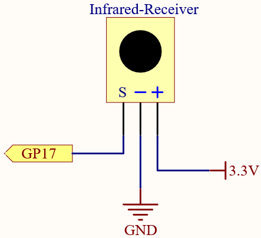
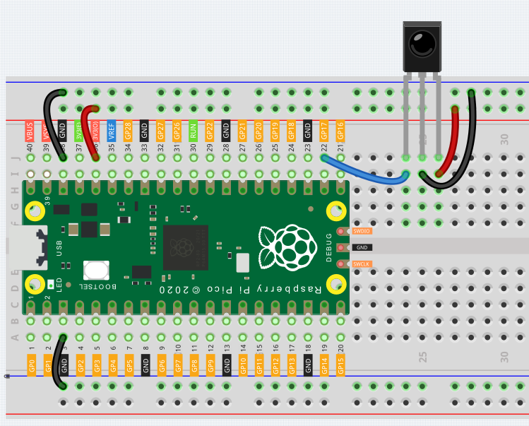
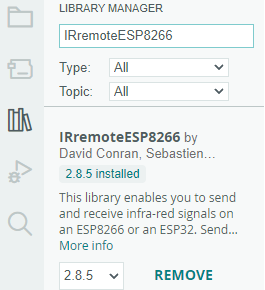
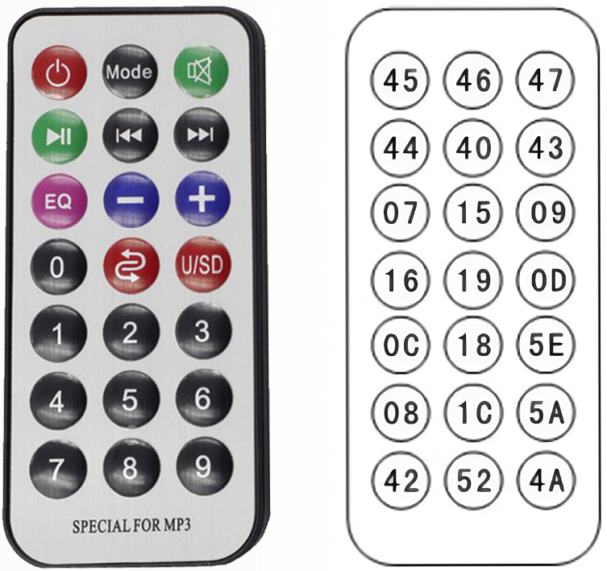

Note
Hello, welcome to the SunFounder Raspberry Pi & Arduino & ESP32 Enthusiasts Community on Facebook! Dive deeper into Raspberry Pi, Arduino, and ESP32 with fellow enthusiasts.
Why Join?
Expert Support: Solve post-sale issues and technical challenges with help from our community and team.
Learn & Share: Exchange tips and tutorials to enhance your skills.
Exclusive Previews: Get early access to new product announcements and sneak peeks.
Special Discounts: Enjoy exclusive discounts on our newest products.
Festive Promotions and Giveaways: Take part in giveaways and holiday promotions.
👉 Ready to explore and create with us? Click [here] and join today!
6.4 - IR Remote Control¶
In consumer electronics, remote controls are used to operate devices such as televisions and DVD players. In some cases, remote controls allow people to operate devices that are out of their reach, such as central air conditioners.
IR Receiver is a component with photocell that is tuned to receive to infrared light. It is almost always used for remote control detection - every TV and DVD player has one of these in the front to receive for the IR signal from the clicker. Inside the remote control is a matching IR LED, which emits IR pulses to tell the TV to turn on, off or change channels.
Schematic

Wiring

Code
Note
You can open the file
6.4_ir_remote_control.inounder the path ofeuler-kit/arduino/6.4_ir_remote_control.Or copy this code into Arduino IDE.
Then select the Raspberry Pi Pico board and the correct port before clicking the Upload button.
The
IRremotelibrary is used here, you can install it from the Library Manager.
The new remote control has a plastic piece at the end to isolate the battery inside. You need to pull out this plastic piece to power up the remote when you are using it. Once the program is running, when you press the remote control, the Serial Monitor will print out the key you pressed.
How it works?
This code is designed to work with an infrared (IR) remote control using the IRremote library. Here’s the breakdown:
Including the library and defining constants. First, the IRremote library is included, and the pin number for the IR receiver is defined as 2.
#include <IRremote.h> const int IR_RECEIVE_PIN = 17;
Initializes serial communication at a baud rate of 9600. Initializes the IR receiver on the specified pin (
IR_RECEIVE_PIN) and enables LED feedback (if applicable).void setup() { Serial.begin(9600); // Start serial communication at 9600 baud rate IrReceiver.begin(IR_RECEIVE_PIN, ENABLE_LED_FEEDBACK); // Start the IR receiver }
The loop runs continuously to process incoming IR remote signals.
void loop() { if (IrReceiver.decode()) { // Check if the IR receiver has received a signal bool result = 0; String key = decodeKeyValue(IrReceiver.decodedIRData.command); if (key != "ERROR") { Serial.println(key); // Print the readable command delay(100); } IrReceiver.resume(); // Prepare the IR receiver to receive the next signal } }
Checks if an IR signal is received and successfully decoded.
Decodes the IR command and stores it in
decodedValueusing a customdecodeKeyValue()function.Prints the decoded IR value to the serial monitor.
Resumes IR signal reception for the next signal.
Helper function to map received IR signals to corresponding keys
// Function to map received IR signals to corresponding keys String decodeKeyValue(long result) { // Each case corresponds to a specific IR command switch (result) { case 0x16: return "0"; case 0xC: return "1"; case 0x18: return "2"; case 0x5E: return "3"; case 0x8: return "4"; case 0x1C: return "5"; case 0x5A: return "6"; case 0x42: return "7"; case 0x52: return "8"; case 0x4A: return "9"; case 0x9: return "+"; case 0x15: return "-"; case 0x7: return "EQ"; case 0xD: return "U/SD"; case 0x19: return "CYCLE"; case 0x44: return "PLAY/PAUSE"; case 0x43: return "FORWARD"; case 0x40: return "BACKWARD"; case 0x45: return "POWER"; case 0x47: return "MUTE"; case 0x46: return "MODE"; case 0x0: return "ERROR"; default: return "ERROR"; } }
{kind=link}